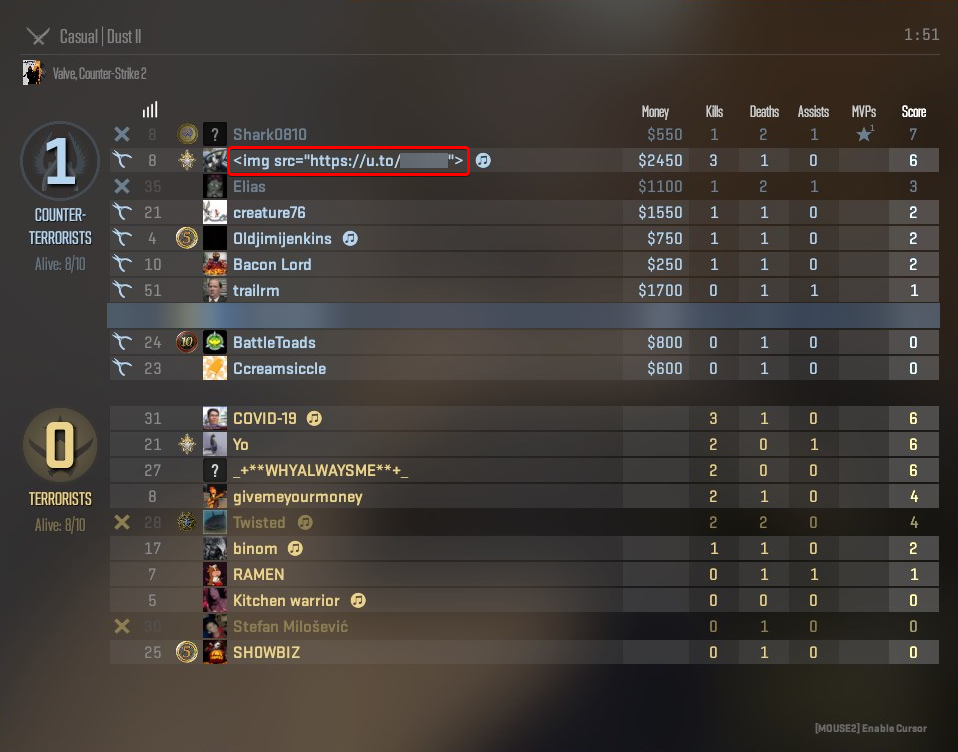
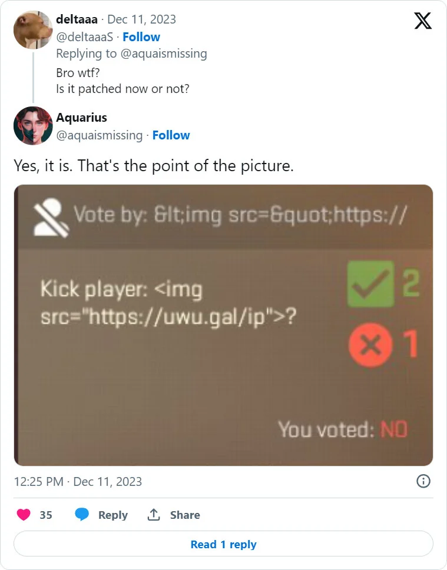

Gamers at risk
2024-05-15
# Intro
Whats up guys, my name is sysgerm and today we will be digging into the recent security bug that has been found in CS:GO 2 and how this affected millions of people.
# What is XSS?
Now you will probably be wondering, what even is XSS and why is it so dangerous?
Cross-Site Scripting (XSS) is a security vulnerability that occurs when an attacker injects malicious scripts into a web application, which are then executed by the browsers of users visiting the affected site. This exploitation enables the attacker to compromise the integrity of the website, potentially extracting sensitive user information, such as login credentials or personal data.
As u can see, this is not at all nice to find in a game with such an active player base and large player base, a lot of people were affected.
# The Works
Now that you know the basics of XSS you must of thought, well where did this vulnerability lie and how was this found?

XSS is found in input fields, and that was also the case with CS:GO 2. The payload itself was placed into the username field and it got executed when doing a vote kick. The vote kick message box uses Valve’s Panorama UI which allowed HTML injection into the UI. Being XSS, you could do a lot with this, it went from executing a simple video from YouTube to grabbing all the ip’s of the players in your lobby and more. The sky really was your limit.
# Can I play CS:GO 2
A couple days ago Valve released a small 7MB update that reportedly fixes the vulnerability and causes any inputted HTML to be sanitized to a regular string.
So to answer your question, yes you can now safely play the game again.

# Outro
It's sysgerm here, keeping you in the loop on all things hacking. Remember, the recent XSS vulnerability might have shaken things up, but with Valve's quick response and that 7MB patch, you can get back to fragging safely.
Happy hacking!